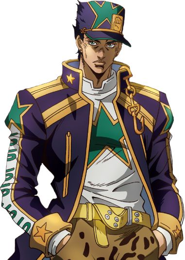
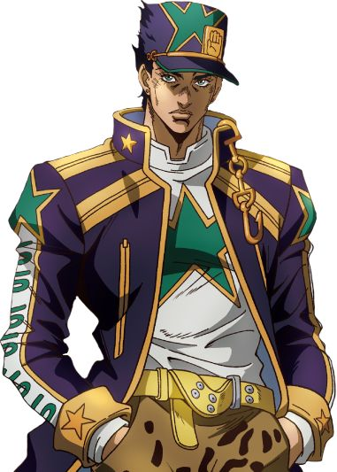

Jotaro Kujo
Son histoire et ses aventures
Jotaro Kujo est un des personnages le plus aimé de la série, mais aussi un des personnages le plus développé au cours de la série "Jojo's Bizarre Adventures". Il a voyagé avec ses compagnons pour vaincre le vampire qui hantait son arbre généalogique depuis une décennie (son arrière grand-père,Jonathan Joestar et son grand-père, Joseph Joestar et autres personnages à venir...).
⋆⭒˚.⋆Son Stand/Pouvoir: Star Platinum ⋆⭒˚.⋆
Star Platinum est l'un des "Stand" les plus puissants de "JoJo's Bizarre Adventure". Il possède une force surhumaine, capable de délivrer des coups rapides et dévastateurs connus sous le nom d'Ora Ora Rush. Sa vitesse est exceptionnelle, lui permettant de réagir plus vite que l'œil ne peut suivre et de déjouer la plupart des ennemis. Le support excelle également en termes de précision, capable d'effectuer des tâches complexes comme attraper des balles en l'air ou enfiler une aiguille avec facilité. L'endurance et la durabilité du Star Platinum le rendent très résistant aux dommages, et sa vue perçante permet à Jotaro de voir les objets éloignés ou cachés. Dans la partie 3, ses pouvoirs sont principalement physiques, mais dans la partie 4, Star Platinum évolue pour acquérir la capacité d'arrêter le temps, un mouvement appelé "Star Platinum : The World". Cela permet à Jotaro de figer le temps pendant une moitié d'une seconde, lui donnant un énorme avantage au combat. C’est l’équilibre parfait entre force brute, vitesse et précision.

 
